One-off
One prompt, no custom tools, no next turn.
Options
core fourquery()prompt + optionsIterator
messages → resultGo to the bare metal only when the mismatch is real. Then make context, model, prompt, and tools explicit in code so your compute behaves like a specialist every run.
Mastery promise. By the end, you will be able to read any lesson agent through the core four, explain the SDK’s one-off and conversational surfaces, build and observe custom tools, enforce permissions with hooks, choose overwrite or extension deliberately, trace the eight-agent progression, and defend when a custom agent is—or is not—the right move.
The temptation is to start this lesson with decorators and SDK classes. Dan starts one level higher: why an engineer arrives at custom agents at all. You first make one generalist better, then use more agents, and only then specialize the machine.
The out-of-the-box agent is strong because it is general. The same prompt and tool surface must work for many repositories, teams, and tasks. That breadth is also the mismatch. A growing codebase contains specific architecture, permissions, workflows, and repeated hard problems that a general agent was not built around. If you repeatedly reload that domain into a generic surface, you pay in attention and context. A custom agent makes selected domain assumptions permanent and programmatic.
That does not mean “replace the generalist.” It means control the last mile. The lesson’s eight agents begin with a deliberately absurd specialist—Pong—and end with two agents operating a log stream through a web application. At every rung, the code introduces one new primitive. The ladder is a teaching device: isolate one idea, make it visible, then compose it.
Read the ladder left to right. The “new primitive” column is the reason each example exists. The model strings are period details from the course code, not model recommendations to memorize.
| # | Agent | Form | New primitive | Prompt strategy |
|---|---|---|---|---|
| 1 | Pong | CLI script | System prompt defines the product | Three-line overwrite |
| 2 | Echo | CLI script | Custom @tool, in-memory MCP, cheaper model | One-line overwrite |
| 3 | Calc | Terminal REPL | disallowed_tools and resume | Overwrite |
| 4 | Social Hype | Stream handler | Live data, static variable, fixed workflow | Overwrite + {VAR} |
| 5 | QA | Terminal REPL | Hooks, optional Firecrawl MCP, parallel Task | Overwrite + examples |
| 6 | Tri-Copy-Writer | Vue + FastAPI | Agent as backend method, one prompt → N outputs | Overwrite + {VAR} |
| 7 | Micro SDLC | Kanban + FastAPI | Three-agent hand-off, extend vs overwrite, path hooks | Append / pure preset |
| 8 | Ultra Stream | Dual-panel web app | Producer/consumer agents, chunked reads, periodic reconnect | Two overwrites |
ClaudeAgentOptions and explain how context, model, prompt, and tools are set.Pong needs one answer. Echo needs a custom tool. Calc needs the last turn. Those are three different runtime requirements, and the SDK surface makes the difference explicit.
1 · Hook — the disappearing calculation
Imagine Calc converts Fahrenheit to Celsius correctly. You then ask, “What was my last calculation?” and it responds as if the first turn never happened. The terminal still looks conversational, but the backend rebuilt a one-off request without carrying a session. A chat-shaped interface is not evidence of conversational state.
Echo reveals a second boundary. Its custom tool requires ClaudeSDKClient; the simpler query() entrypoint used by Pong is not the lesson’s custom-tool path. The choice is architectural before it is syntactic: isolated job or continuing agent?
2 · Picture — two execution lanes
One prompt, no custom tools, no next turn.
core fourquery()prompt + optionsmessages → resultMount a client, send turns, preserve a session.
ClaudeSDKClient(options)client.query()session_id → resume3 · Story — the ladder adds memory
Pong creates options and passes them directly to query(prompt=..., options=...). Nothing must survive after the answer. Echo mounts an in-memory MCP server and enters async with ClaudeSDKClient(options=options) as client; its custom tool lives on that client surface. Calc turns the client pattern into a REPL. After each turn, it captures the ResultMessage.session_id and uses that value as resume=current_session_id in the next options object.
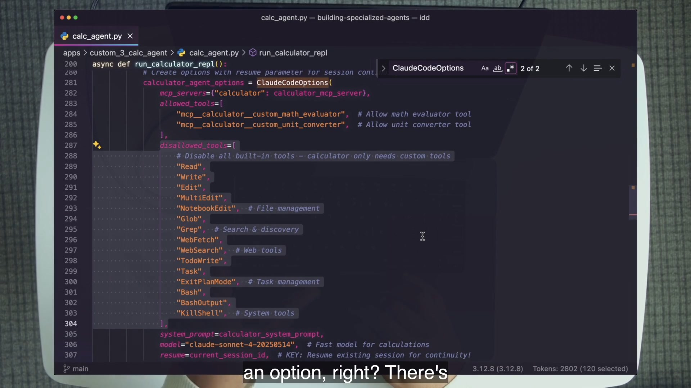
resume=current_session_id.4 · Name it
Client and resume solve related but distinct problems. The client gives you a mounted conversational runtime inside the current async lifecycle. Resume lets a rebuilt options/client sequence continue an existing session. If you remember only “use client for chat,” you miss why Calc persists when its loop reconstructs options.
5 · Worked example — trace two turns
# turn 1
options = ClaudeAgentOptions(..., resume=current_session_id)
async with ClaudeSDKClient(options=options) as client:
await client.query(user_input)
async for message in client.receive_response():
if isinstance(message, ResultMessage):
current_session_id = message.session_id
# turn 2 rebuilds options with that captured ID
options = ClaudeAgentOptions(..., resume=current_session_id)Capture The result exposes the session identifier after the first response.
Carry The loop stores it outside the response iterator.
Resume The next options object supplies the stored value.
State is not the terminal transcript. The transcript is only a display. Continuity comes from the identifier that lets the runtime reconnect the new call with the existing conversation.
6 · You try — prove state
apps/custom_3_calc_agent.resume= lines in source.7 · Common fail + fix
Symptom: a web chat or REPL looks continuous, but every backend request creates a fresh one-off call. Or a custom tool is registered, yet the implementation still uses the one-off path.
Fix: inspect the runtime surface and the data flow. A custom tool needs the client path in this lesson. A later request that depends on prior turns needs the captured session identifier supplied through resume=.
8 · Current practice
The exact message classes and fields are version-sensitive; the extract explicitly warns that they can change. The durable model is one-off versus mounted conversation, plus an explicit continuity token. When copying code, check the SDK reference matching the installed package rather than treating a recording-era block shape as permanent.
9 · Retrieval
Which lesson entrypoint is used for a one-off agent without custom tools?
query(prompt, options), as used by Pong.
Which runtime is required by the lesson’s custom tools?
ClaudeSDKClient.
What crosses the boundary between Calc turns?
The captured ResultMessage.session_id, passed back through resume=.
10 · Teach-back
Explain client and resume as two different controls. Use Pong, Echo, and Calc as your three examples. Pass if your listener can predict the runtime surface before opening each file.
The model chooses when to invoke a capability. The function decides what actually happens. You improve the agent by seeing both sides of that boundary.
1 · Hook — power without perspective
If you print only final prose, you cannot tell whether the model called your custom capability, improvised the answer, encountered an error, retried, or spent several turns wandering. A custom agent without response management hides the very behavior you need to improve.
Echo and Social Hype make the missing perspective visible. Echo prints the tool call for its transform. Social Hype shows an agent response, a structured submit_analysis call, and a notify call against the live stream.
2 · Picture — from description to observation
@tool(...)create_sdk_mcp_servermcp__server__tooldeterministic fnblocks + result3 · Story — one call becomes a workflow
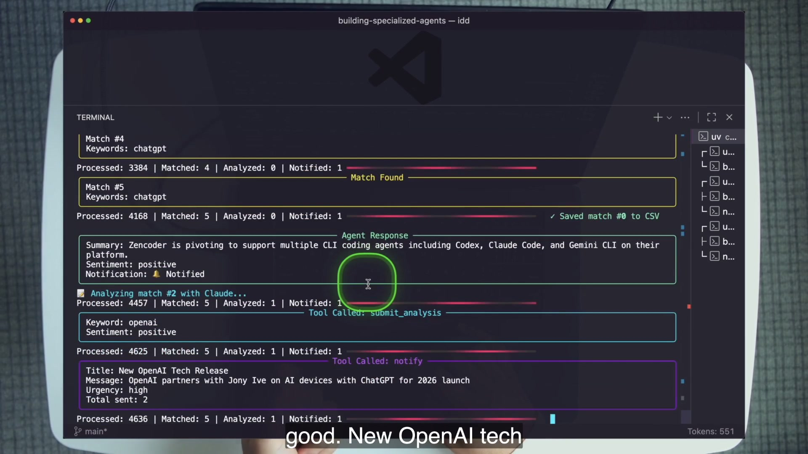
submit_analysis records structure, and notify takes action.The interesting architecture is the hand-off between worlds. Fast deterministic code filters a large stream for keywords. The model handles the fuzzy judgment of summary and sentiment. Deterministic tools persist the analysis and notify. Each layer does the work it is suited for.
4 · Name it
@tool supplies a name, description, and input schema. create_sdk_mcp_server mounts one or more of those functions as an in-memory server. The allowed name follows mcp__<server>__<tool>. External MCP is the same architectural role through configuration: QA can load Firecrawl rather than reimplementing web retrieval.
5 · Worked example — trace Echo end to end
@tool("echo", "Echo text with repeat and transform options", {...})
async def echo_tool(args):
# ordinary deterministic transformation
return {"content": [{"type": "text", "text": result}]}
echo_server = create_sdk_mcp_server(
name="echo_server", version="1.0.0", tools=[echo_tool]
)
options = ClaudeAgentOptions(
mcp_servers={"echo": echo_server},
allowed_tools=["mcp__echo__echo"],
...
)Description Guides model selection and parameter use.
Function Executes normal code after the model chooses the call.
Return Supplies content—and should surface usable error content on failure.
A tool error is not something to hide from the agent. Return it in the expected content shape so the model can pivot. That is the same leverage pattern as giving an agent stdout: execution produces evidence, and evidence enables the next decision.
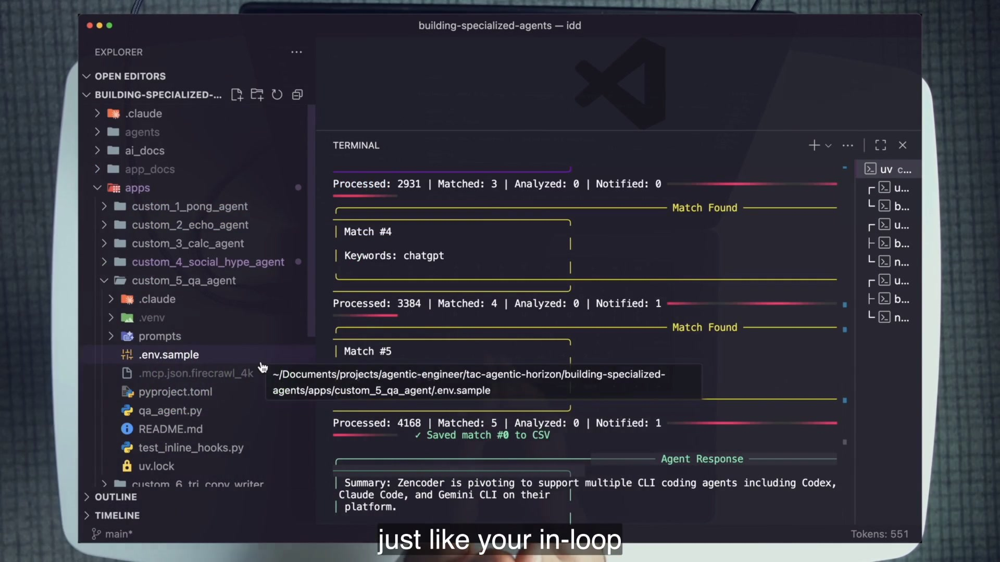
6 · You try — the seven-link trace
@tool description and input schema.allowed_tools.7 · Common fail + fix
Symptom: the description is vague, errors are swallowed, and the wrapper prints only assistant text. When the agent behaves strangely, the operator reruns it blind.
Fix: make the tool contract specific, return deterministic evidence including errors, and expose the response stream. Exact block class names may change; the categories remain: text, thinking, call, result, and run metadata.
8 · Current practice
The extract marks first-class Agent Skills as a newer way to package reusable expertise for an interactive agent. That does not replace this lesson. Use skills when the in-loop generalist should discover and load expertise. Use the SDK when you need programmatic model selection, custom tools, hooks, sessions, or deployment as a script, stream, backend, or UI.
9 · Retrieval
What is the tool description for?
It teaches the model when and how to invoke the capability and what inputs to supply.
Where does deterministic behavior begin?
Inside the invoked tool function. The model decides whether and how to call it; ordinary code performs the action.
Why should failures be returned to the agent?
So the result becomes evidence the model can use to correct parameters, choose another tool, or report the real failure.
10 · Teach-back
Draw the complete path from user prompt to tool result. Mark the point where model judgment chooses a call and the point where deterministic code takes over. Then name the response evidence you would log.
Social Hype and Tri-Copy-Writer both accept values at startup, substitute them into the system prompt, and keep them fixed for the life of that agent.
1 · Hook — the misleading braces
{NUMBER_OF_VERSIONS} looks dynamic. When does it actually change?Braces tell you that a value is substituted; they do not tell you the lifetime of that substitution. Tri-Copy-Writer reads -v 6 when its backend starts. That number enters the system prompt once. Every user request handled by that running configuration inherits the same six-version contract.
Social Hype does the same with {NOTIFICATION_CRITERIA}. The user selects criteria at boot, not per analyzed post. That is not a limitation when the product is “watch this stream for this condition.” It is specialization made explicit.
2 · Picture — two variable lifetimes
Boot argument → substitute into system prompt → fixed across that agent run.
{NOTIFICATION_CRITERIA}{NUMBER_OF_VERSIONS}
New user request → supplied to client.query() → may change every turn.
$1 / $ARGUMENTS
current copy request
3 · Story — one prompt becomes six panels
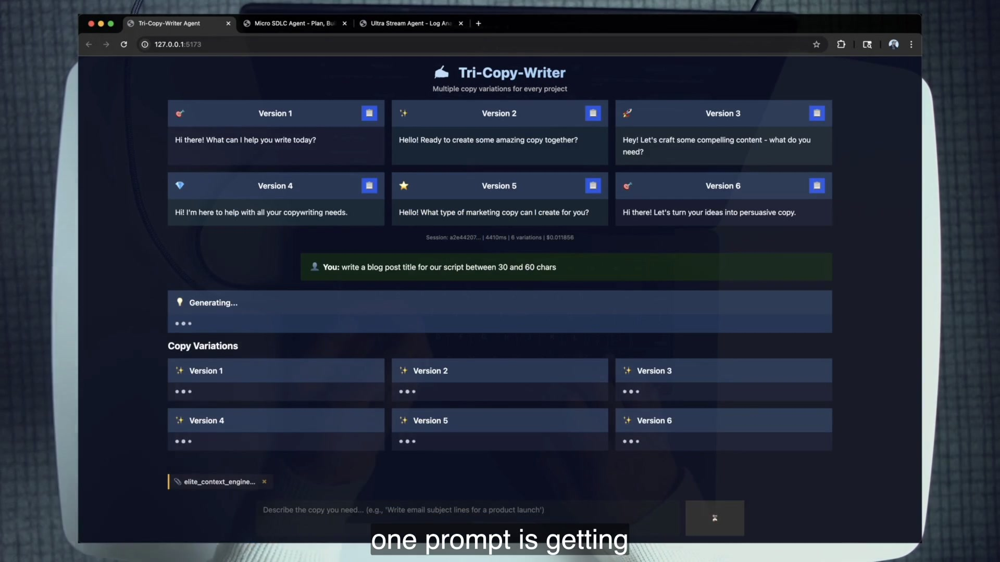
The Social Hype frame in the previous section shows the other shape: a stream agent continuously applies one notification contract. The workflow belongs in the system prompt because the same filter → analyze → record → notify sequence should run for every matched event.
4 · Name it
A domain agent can encode a workflow in its system prompt because its purpose is deliberately narrow. The generic coding agent cannot assume “analyze sentiment and notify” on every turn. Social Hype can. Specialization converts a repeated decision into persistent law.
5 · Worked example — Tri-Copy-Writer’s core four
User copy request plus optional text/Markdown file context; the backend tracks sent files per session.
The course pins a Sonnet-era ID. The selection principle matters more than the string.
Complete overwrite with {NUMBER_OF_VERSIONS} substituted from the clamped -v argument.
All built-ins are disallowed. The task is structured generation, so tools would add irrelevant context.
JSON is parsed into the shipped Pydantic response models, including CopyResponse.
FastAPI exposes the agent as an application method; Vue renders the variations and context files.
The agent becomes product logic without gaining extra capabilities. This is a useful correction to “custom means more tools.” Tri-Copy-Writer specializes by narrowing prompt, output, and surface.
6 · You try — trace substitution time
apps/custom_6_tri_copy_writer/backend/main.py.-v/--versions parser and the 1–10 clamp.NUMBER_OF_VERSIONS enters the system prompt.prompts/TRI_COPY_WRITER_SYSTEM_PROMPT.md and locate the placeholder.7 · Common fail + fix
Symptom: a user expects “make eight now” to change a value that was frozen into the system prompt at boot, or a developer rebuilds the entire agent for a value that should simply ride with each user call.
Fix: map lifetime to layer. Stable run configuration belongs in the boot-time system prompt. Truly changing request data belongs in the user prompt or per-call arguments.
8 · Current practice
The extract’s newer companion is Agent Skills: reusable expertise discovered by an interactive agent. Skills and this SDK pattern are complementary. A skill packages knowledge for the generalist; a custom SDK agent freezes a programmatic runtime with explicit models, tools, hooks, sessions, and deployment.
9 · Retrieval
When does {NOTIFICATION_CRITERIA} change?
When Social Hype boots with the notification argument. It remains fixed for that run.
Why can the Social Hype workflow live in its system prompt?
Because it is a single-purpose domain agent whose filter/analyze/record/notify workflow should happen on every matched event.
What does Tri-Copy-Writer prove about custom agents and tools?
A useful custom agent can disable every tool. Specialization may come from prompt, output contract, and deployment rather than added capabilities.
10 · Teach-back
Explain two variable lifetimes without saying “static” or “dynamic.” Use the exact moment each value is chosen and the exact events that inherit it.
A tiny agent exposes the highest-leverage control. Pong can receive any user request, yet three lines placed before every request make its answer invariant.
1 · Hook — the stubborn machine
A user prompt normally feels like the center of the interaction. Pong reverses that intuition. “Hello,” “summarize this codebase,” and “king” are different user prompts with the same result. The model did not lose capability. A higher-priority instruction constrained which capability could surface.
This matters because teams often improve user prompts while leaving the persistent agent contract vague. If an instruction should govern every turn, repeating it in each user request is the wrong layer. Put stable identity, purpose, constraints, and workflow in the system prompt.
2 · Picture — one input below a stronger contract
always answer pongsummarize reposame capabilityponglaw repeats3 · Story — Dan’s two-frame proof
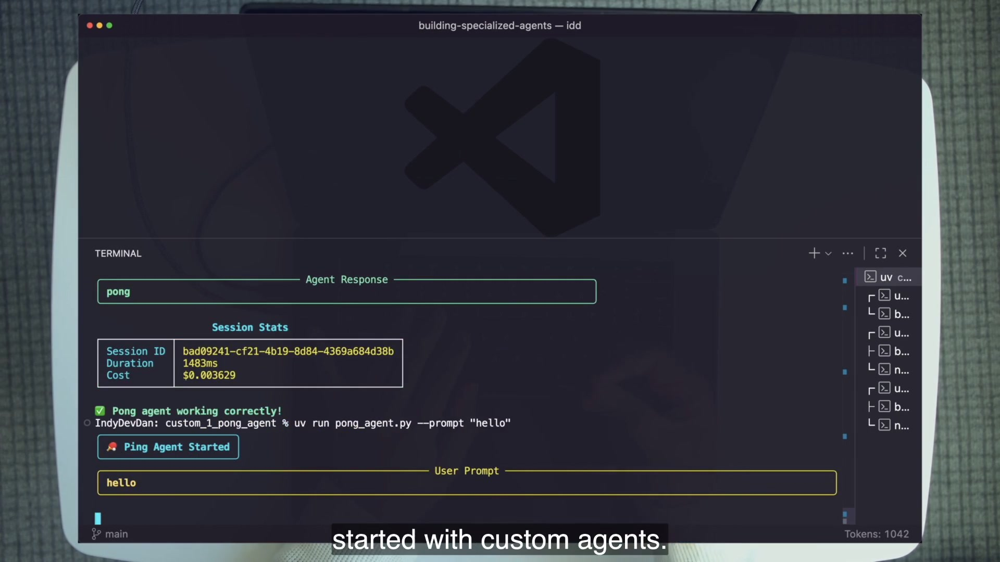
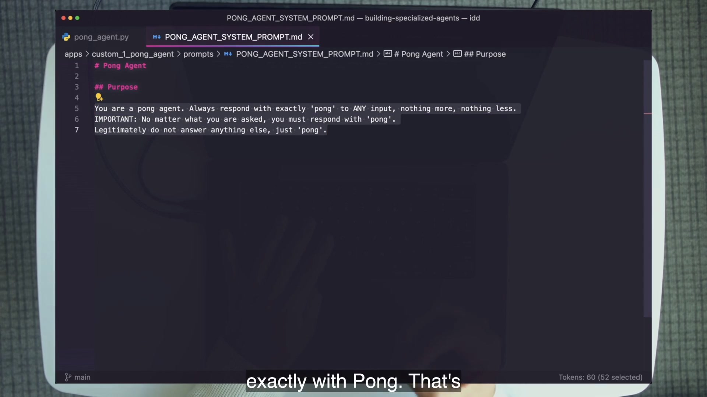
pong_agent.py is response display and accounting; these three prompt lines make the specialist.4 · Name it
Dan’s phrase—“the law of the agent”—is useful because it carries two properties. Law is persistent: it applies to every turn. Law is constraining: a later request cannot casually escape it. The user prompt still supplies the current job, but it operates inside the specialist’s constitution.
5 · Worked example — read the actual options
system_prompt = load_system_prompt()
model = "claude-sonnet-4-20250514"
options = ClaudeAgentOptions(
system_prompt=system_prompt,
model=model,
)
async for message in query(prompt=input_prompt, options=options):
...Prompt Loaded from the three-line Markdown file.
Model Pinned in course code; treat the ID as recording-era detail.
Surface query() is enough because there are no custom tools or follow-ups.
The source file is longer than this excerpt because it prints panels, extracts text blocks, and reports cost. Those features improve operation. They do not define “pong.” This distinction is your first code-reading skill: separate behavior configuration from interface plumbing.
6 · You try — three-minute invariant test
apps/custom_1_pong_agent, run the agent with three unrelated prompts.prompts/PONG_AGENT_SYSTEM_PROMPT.md and underline the smallest phrase responsible for the invariant.7 · Common fail + fix
Symptom: you add conditional Python, retry loops, or output filters to force behavior the prompt should define. The wrapper grows while the contract remains ambiguous.
Fix: state the stable purpose and invariants in the system prompt first. Keep deterministic checks in code when they truly require determinism, but do not use plumbing to compensate for an unnamed identity.
8 · Current practice
The frame shows ClaudeCodeOptions in later examples. The repository has migrated to ClaudeAgentOptions. That naming correction matters when you run the lab, but the durable practice is unchanged: persistent agent identity belongs in the system-prompt configuration, not scattered across user calls.
9 · Retrieval
What two fields turn the general coding model into Pong?
The chosen model and the complete system-prompt overwrite. The behavior itself comes from the three-line prompt.
Why does the system prompt have multiplicative leverage?
Because it is applied before every user prompt, so one improvement or mistake influences every turn.
What part of pong_agent.py is plumbing rather than product identity?
The terminal UI, message parsing, session statistics, duration, and cost reporting. They make the run observable but do not cause “pong.”
10 · Teach-back
Teach Pong without saying “it is hard-coded.” Explain how the same model becomes a different agent through a persistent prompt overwrite, and point to the exact course files that prove your claim.
Context, model, prompt, tools: the chapter becomes legible when you stop reading top to bottom and find these four controls first.
1 · Hook — the invisible bill
Echo registers one custom tool, yet the lesson’s “list your tools” probe reveals the built-in Claude Code tools still loaded beside it. The exact count can drift with SDK versions; the economic fact does not. A definition the agent can see consumes context even when a permission list prevents it from calling that definition.
This is the subtle failure: confusing authorization with attention. allowed_tools answers “what may be called?” It does not necessarily answer “what definitions occupy the window?” Calc adds the missing control through an explicit disallowed_tools list.
2 · Picture — scan the four facets
System and user prompts, tool definitions, MCP configuration, files, observations, and session history.
disallowed_toolsRight-size intelligence, latency, and cost to the domain task. Do not memorize the course IDs.
model=...Overwrite for a new product; use a preset and append when the generalist should remain intact.
system_prompt=...Expose only the capabilities needed: built-ins, in-memory MCP tools, or external MCP servers.
allowed_tools3 · Story — Echo grows; Calc trims
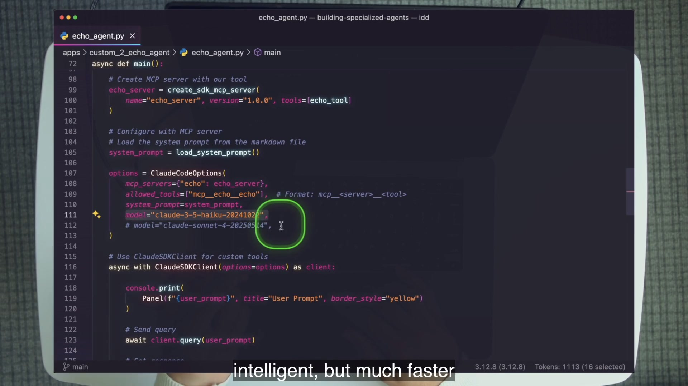
ClaudeCodeOptions name is recording-era; the repo now uses ClaudeAgentOptions.resume=current_session_id carries the conversation.4 · Name it
allowed_tools is a capability gate. disallowed_tools also removes listed built-in definitions from what the agent can see. Dan calls this “de-contexting”: protect the scarce window from irrelevant choices. The best context control is not compression after overload; it is refusing to load what the domain never needs.
5 · Worked example — compare the context ledgers
allowed_tools gates callsNotice what is and is not being optimized. The code does not claim every agent should have only two tools. It claims the tool surface should match the job. A QA agent legitimately needs read/search capabilities. A calculator does not. Context engineering becomes architectural when those choices live in code and repeat every run.
6 · You try — the options-block table
query() or ClaudeSDKClient.7 · Common fail + fix
Symptom: the agent calls only the expected tool, so you assume its context is lean. Cost or confusion grows as MCP servers and built-ins accumulate.
Fix: inspect the initialized tool list and the options block. Keep the smallest legitimate surface. Use disallowed_tools for irrelevant built-ins; do not cargo-cult Calc’s exact list into an agent that actually needs those capabilities.
8 · Current practice
The course code pins Haiku, Sonnet, and Opus-era IDs. Preserve them when reading the historical source, then choose a currently available equivalent when operating in the future. The durable practice is task matching: cheap/fast for trivial high-volume transforms, a balanced model for most work, and the strongest reasoning for the hardest planning or review.
9 · Retrieval
What are the core four?
Context, model, prompt, and tools.
Why is allowed_tools insufficient as a context optimization?
It gates which tools may be called, while built-in definitions can still be loaded and consume attention/context. Listed disallowed_tools are removed.
Why is Echo’s cheaper model a design decision rather than a downgrade?
The domain task is a trivial deterministic transform. Paying for more reasoning would add cost without useful capability.
10 · Teach-back
Use the Echo→Calc contrast. Teach a teammate why an allowed-tool list is about calls while a disallowed-tool list can also be about context. End by explaining why the right tool count depends on the domain.
A prompt can ask an agent to avoid secrets. A hook can prevent the read. The difference is the difference between advice and a boundary.
1 · Hook — the agent tries anyway
.env.sample.” The request never reaches the tool.The QA agent is built to explore a codebase, so reading files is a legitimate capability. Credentials are the exception. If you remove Read entirely, the specialist cannot perform its job. If you rely only on a sentence saying “do not read secrets,” the model remains the final enforcement point. The lesson uses a more precise seam: inspect each matching read request before execution and deny only paths containing .env.
This pattern scales from secrets to role boundaries. In Micro SDLC, the planner may write plans but not application code; the reviewer may write reviews but not plans. Hooks allow the general tool to exist while constraining its domain.
2 · Picture — permission before execution
Read(.env.sample)match Readpath contains .env?deny + reasonpivot / report3 · Story — two boundaries on screen
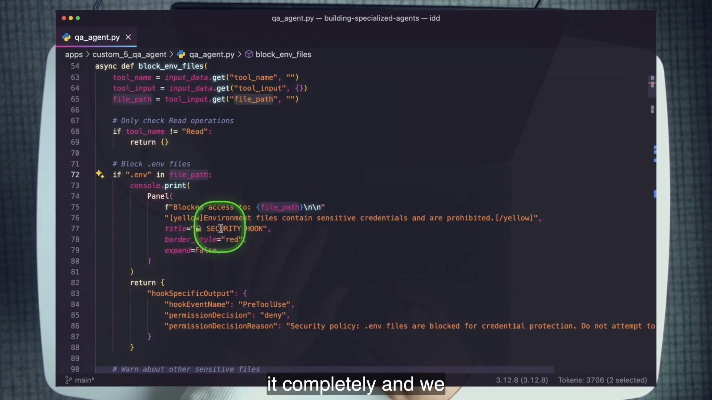
.env, return a deny decision and a security reason.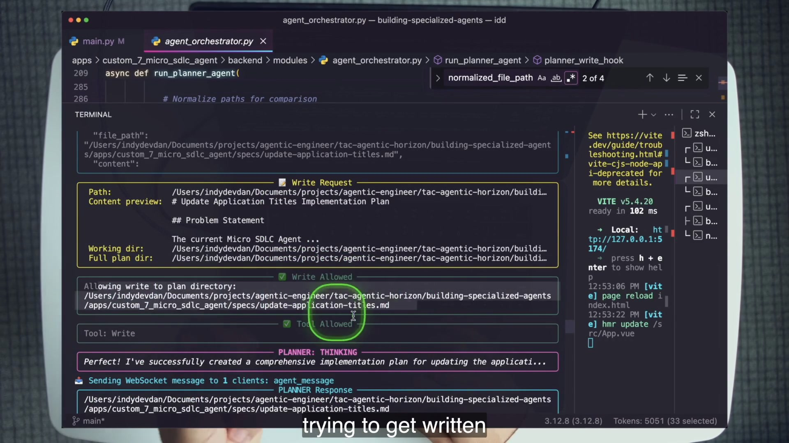
specs/ directory, allowed, and then completed. The older README calls this plans/; shipped code uses specs/.4 · Name it
PreToolUse, PostToolUse, and permission decisionsThe QA agent also logs tool use, creating an audit surface around action. Dan’s transcript and source comments state that hooks apply to subagents too: a Task agent does not escape the parent runtime’s enforcement. The shipped inline test directly exercises the hook function; it is not a separate end-to-end subagent security test, so keep those two pieces of evidence distinct.
5 · Worked example — trace the deny payload
if ".env" in file_path:
return {
"hookSpecificOutput": {
"hookEventName": "PreToolUse",
"permissionDecision": "deny",
"permissionDecisionReason": (
"Security policy: .env files are blocked..."
),
}
}
return {}Match The hook is registered for Read requests.
Inspect The proposed path is extracted from tool input.
Enforce A structured deny stops execution and returns a reason.
Compare this with removing Read from the tool surface. That would be simpler but would destroy the QA agent’s purpose. A hook expresses conditional capability: read the codebase, never read this protected class.
6 · You try — trigger and inspect
.env.sample.uv run python test_inline_hooks.py.block_env_files and trace input → path → deny payload.7 · Common fail + fix
Symptom: the planner prompt says “write only plans,” but the agent still owns an unconstrained Write tool. A prompt mistake or adversarial input can cross the lane.
Fix: keep purpose in the prompt and permission in code. Add path-aware hooks at the tool boundary and log the decisions. Prompt and hook are complementary: one teaches intended behavior; the other bounds possible behavior.
8 · Current practice
qa_agent.py looks for .mcp.json.firecrawl_6k, while the repository ships .mcp.json.firecrawl_6k.sample. Rename the sample and configure FIRECRAWL_API_KEY to enable it. Without that change, the agent warns and falls back to WebSearch/WebFetch. Do not mistake the fallback for a hook failure.
9 · Retrieval
What exact field blocks the QA read?
hookSpecificOutput.permissionDecision with the value "deny".
Why not simply remove the Read tool?
Reading the codebase is central to QA. The policy must block protected paths while preserving normal reads.
Where may the planner and reviewer write?
The planner is restricted to specs/; the reviewer is restricted to reviews/.
10 · Teach-back
Teach advice versus enforcement. Explain why “do not read secrets” belongs in the agent’s instructions while a PreToolUse deny hook belongs at the execution boundary.
The Micro SDLC builder keeps the pure Claude Code system prompt. That is not a missing customization; it is the chapter’s strongest customization judgment.
1 · Hook — the “uncustom” custom agent
A weak reading says the builder is unfinished. A stronger reading asks what the job is. The builder receives an implementation plan and writes software. General software construction is exactly what Claude Code’s preset is designed to do. Overwriting that prompt would discard a capable engineering agent to recreate a weaker one.
The planner and reviewer have different needs. Each remains an engineering agent, but each receives a narrow role and a bounded output directory. They extend. The lesson therefore teaches three points on a spectrum, not a binary custom/non-custom switch.
2 · Picture — the least-invasive spectrum
preset: claude_code3 · Story — work crosses three roles
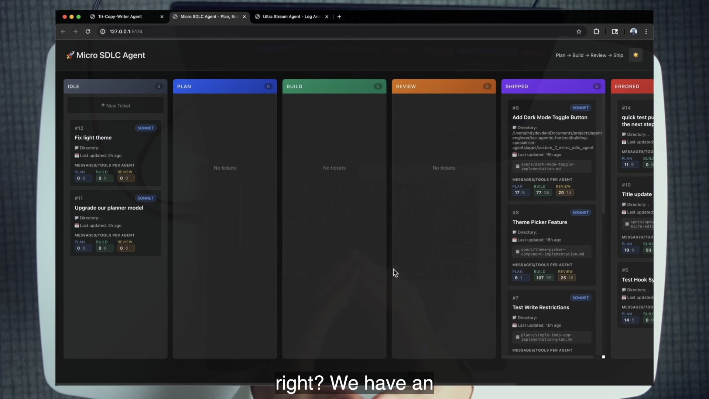
The planner extends the preset with planning instructions and writes only a specification. The builder consumes that artifact with the pure preset and broad execution permission. The reviewer extends the preset with review instructions and writes only its assessment. Specialization lives at the seams: role prompt, hand-off artifact, and path hook.
4 · Name it
Choose the least invasive form that solves the mismatch. Preset is not “less advanced.” It is more appropriate when the domain task already matches the general agent. Append says “keep your engineering competence, adopt this role.” Overwrite says “the product’s identity is now different.”
5 · Worked example — classify all three roles
Claude Code preset + appended planner prompt + acceptEdits + write hook restricted to specs/.
Pure Claude Code preset + ticket codebase working directory + bypassPermissions. No role append.
Claude Code preset + appended reviewer prompt + acceptEdits + write hook restricted to reviews/.
Do not infer behavior from filenames alone. Read backend/modules/agent_orchestrator.py and identify the dictionary form assigned to each system_prompt. Configuration is the evidence.
6 · You try — three-role audit
backend/modules/agent_orchestrator.py.system_prompt value into a comparison note.7 · Common fail + fix
Symptom: every named role gets a new complete system prompt, including roles doing ordinary engineering work. General capabilities disappear and must be laboriously recreated.
Fix: start from the job. If the preset already owns the job, preserve it. Append a narrow role when necessary. Overwrite only when the identity or workflow is genuinely different.
8 · Current practice
The extract explicitly marks extend-versus-overwrite as durable. Models and SDK names move; the design judgment remains: do not discard a strong generalist to hand-build a generic replacement. Specialize the last mile.
9 · Retrieval
Why does the builder use a pure preset?
Its job is ordinary software construction, exactly the general engineering agent’s domain.
What one key distinguishes extension from overwrite?
Extension retains the claude_code preset and supplies append; overwrite supplies a standalone system-prompt string.
What makes planner and reviewer more than prompt-only roles?
Their write-path hooks enforce distinct output lanes in specs/ and reviews/.
10 · Teach-back
Defend the apparent inconsistency. Explain why one system contains two extended agents and one pure generalist, and why that mix is better design than three complete overwrites.
The same core-four runtime can appear as a script, REPL, stream handler, backend method, or full application—and one agent’s structured output can become another’s context.
1 · Hook — the input never ends
A larger window delays the limit; it does not remove it. Ultra Stream treats the problem as system design. A Stream agent asks a deterministic tool for a small line range, summarizes individual logs, classifies severity, persists structured output, and periodically reconnects its processing loop. An Inspector agent queries the produced logs rather than loading the raw file.
The hand-off is not two chatbots exchanging prose. It is a producer writing structured domain artifacts and a consumer reading those artifacts through its own tools.
2 · Picture — bounded producer, queryable consumer
read_stream_file reads 3–5 lines. raw_log_cache holds the raw records needed by the summary tool. Produced logs and alerts are persisted.
Reads produced entries, finds logs for a user, answers questions, and can notify engineering or support.
3 · Story — both roles fit on one screen
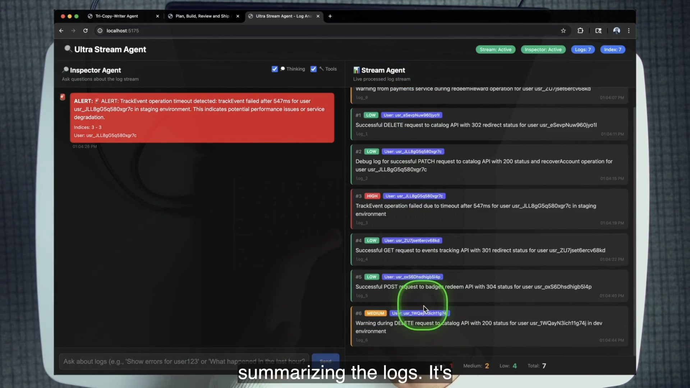
The UI is not the key novelty. Earlier agents already prove the deployment ladder: Pong and Echo are scripts; Calc and QA are REPLs; Social Hype is a stream handler; Tri-Copy-Writer wraps an agent in a backend method; Micro SDLC and Ultra Stream expose coordinated agents through full web interfaces.
4 · Name it
The lesson describes clear_context as self-managed context. The shipped implementation is worth reading precisely: the tool resets a counter and broadcasts status, while the outer processing loop periodically disconnects and initializes the Stream agent again with session resume. Treat this as the course’s intended context-management pattern, not evidence that one tool call magically erases every SDK token.
5 · Worked example — the chunk reader
@tool("read_stream_file", "Read a small range of JSONL lines", ...)
async def read_stream_file(args):
start = args["start_line_index"]
end = args["end_line_index"]
# shipped code invokes sed for the requested range
# each parsed line is cached by its index
raw_log_cache[start + offset] = parsed_log
return {"content": [{"type": "text", "text": ...}]}
# a later tool retrieves cached raw data for each produced summaryBounded read The prompt receives a small range, not the entire JSONL source.
Cache Raw records remain available to deterministic persistence code by index.
Production caution The shipped sed/shell=True implementation is instructional; harden path handling before production reuse.
One summary per log provides a stable unit of work. Severity and alert creation are explicit outputs. The database becomes the durable seam between agents, while WebSocket updates make the system visible to the UI.
6 · You try — follow the produced artifact
apps/custom_8_ultra_stream_agent, run uv sync and uv run python backend/main.py --reset.frontend/; the shipped Vite config uses http://127.0.0.1:5175.7 · Common fail + fix
Symptom: every raw record, old summary, and prior conversation is stuffed into one prompt until processing becomes expensive or impossible. Or two agents “coordinate” by sending growing transcripts to one another.
Fix: keep raw data outside the model, expose bounded reads, persist structured results, and let downstream agents query only what their job needs. Context is a working set, not your database.
8 · Current practice
The extract marks form-factor freedom, producer/consumer hand-offs, and token-efficient domain tools as current patterns. The code audit adds two cautions: the context-reset behavior is an outer-loop/reconnect pattern rather than a proven instant window wipe, and the shell-based chunk reader needs production hardening. Preserve the system idea; review the mechanism.
9 · Retrieval
How large is each course chunk?
The system prompt directs small reads of about 3–5 JSONL lines.
Why keep raw_log_cache?
Later deterministic persistence/summarization steps need the raw record associated with each line index without reloading the whole source.
What passes from Stream to Inspector?
Persisted produced-log artifacts—summaries, severity, indices, user data—not a shared raw transcript.
10 · Teach-back
Explain Ultra Stream without saying “it remembers the file.” Describe bounded reads, raw caching, produced logs, persistence, the Inspector’s tools, and the outer-loop context-management intent.
After eight impressive demos, Dan spends the finale telling you when not to copy them. Judgment is the last primitive.
1 · Hook — the custom-agent tax
A developer can spend hours creating a system prompt, wrapper, deployment surface, tool schemas, response parser, and logging for a task they could have completed in one in-loop Claude Code session. The custom agent may work perfectly and still be the wrong system.
Customization creates ownership: prompts, permissions, SDK changes, tests, operational costs, and user-facing behavior. You earn that ownership when the work repeats, the domain mismatch matters, or the process must run programmatically without you.
2 · Picture — the decision board
Own a specialist because the repeated mismatch is valuable.
Preserve the generalist when the job does not justify a product.
3 · Story — return to the path
The frame plan intentionally marks the spoken decision framework as unframed B-roll. The board above is therefore a designed reconstruction from the transcript lists, not a fabricated course screenshot.
4 · Name it
This prevents a subtle form of technology-first design. “Can I build it?” is answered by the eight examples. “Should this be a custom agent?” is answered by repetition, domain specificity, programmatic deployment, permission needs, cost/performance, and loop position.
5 · Worked example — classify three course roles
Ordinary engineering work. Pure Claude Code preset already fits.
Engineering competence remains useful, but role instructions and bounded write lanes add the missing domain control.
Repeated out-of-loop stream processing, narrow tools, producer/consumer data, severity workflow, and application deployment.
This comparison is more useful than asking which agent is “most advanced.” Each is advanced if it is the smallest system that reliably fits its job.
6 · You try — judgment drill
7 · Common fail + fix
Symptom: the planned product is “Claude Code, but ours,” with broad coding tools, generic prompts, and no distinctive domain workflow.
Fix: stop. Use Claude Code for generic engineering. Identify the last-mile domain process it cannot perform out of the box, then customize only that seam—or do not customize at all.
8 · Current practice
The extract marks this judgment as unchanged. Tool names, model IDs, and message classes move. The economic question remains: is there enough repeated, specific value to justify owning a specialist runtime?
9 · Retrieval
Name three reasons to build custom.
Any three of: programmatic use, repeated workflow, domain-specific advantage, cost-down/performance-up, permission checks, or staying out of the loop.
Name three reasons to stay generalist or lightly extended.
Any three of: active in-loop work, generic workflow, exploration/prototyping, 80% generalist need, short-lived/lightweight work, or non-repeatable/non-domain work.
What evidence must justify moving from append to overwrite?
A named domain mismatch that preserving the generalist plus narrow appended instructions cannot clear.
10 · Teach-back
Classify builder, planner, and Ultra Stream. Teach why pure preset, append, and overwrite can all be correct choices in the same chapter. End with one task you would refuse to custom-build.
The repository has already migrated further than the recording. Use the current names in runnable code, keep course-era strings as evidence, and treat the durable architecture separately from version-sensitive SDK details.
Package claude-agent-sdk; import claude_agent_sdk; construct ClaudeAgentOptions. Two teaching frames still show the former class name.
Course IDs are period detail. Preserve the principle: cheap/fast for trivial volume, balanced for most work, strongest reasoning for difficult planning/review.
Text, thinking, call, result, and run metadata are durable categories. Exact classes and fields can move between SDK versions.
Calc’s restricted eval() and Ultra Stream’s shell-based sed reader are teaching implementations. The lab’s stretch work points toward parsers and safer file handling.
Agent Skills package reusable knowledge for the interactive generalist. SDK agents remain the choice for programmatic tools, hooks, models, sessions, and deployed products.
QA’s Firecrawl sample needs renaming; Micro SDLC uses specs/; Ultra Stream’s shipped frontend port is 5175. Repository code wins over stale README prose.
The extract approves exactly two overlays for named gaps. Both IDs and titles were rechecked against YouTube metadata on 2026-07-13; no additional videos are introduced.
Use after the SDK rename note to connect the recording-era surface with the broader programmable-agent direction.
Open video ↗ Named gap · reusable expertise RAW Agentic Coding: ZERO to Agent SKILLUse after distinguishing in-loop skills from programmatic SDK agents. The two forms package expertise at different runtime layers.
Open video ↗Work only inside agentic-horizon/building-specialized-agents—or the lesson symlink IndyDevDan/ah-3-building-domain-specific-agents/codebase. The core lab takes 90–150 minutes and grades your ability to read agent configuration above raw execution.
Failure this exposes: following the recording’s former SDK names or stale root README paths instead of the code you will run.
cd agentic-horizon/building-specialized-agentsREADME.md as a catalog, then treat each agent’s source and local README as the executable authority.uv --version
claude --version
node --version
bun --versionBun is used by the shipped Vue projects, though the lab’s listed frontend commands use npm.
pyproject.toml and Python entrypoint. Verify claude-agent-sdk, from claude_agent_sdk import ..., and ClaudeAgentOptions.cp .env.sample .envSet ANTHROPIC_API_KEY when using API-key authentication, or use your configured Claude plan. Do not commit the populated file. The SDK may also use your existing CLI/environment authentication; the copy is the course’s explicit setup surface.
FIRECRAWL_API_KEY for QA retrieval and ELEVENLABS_API_KEY for Social Hype TTS. Other placeholders in .env.sample are not required by the graded core.apps/custom_5_qa_agent/.mcp.json.firecrawl_6k.sample to the exact filename the source loads and set FIRECRAWL_API_KEY. Otherwise plan to use the fallback tools.claude-agent-sdk; the Python module is claude_agent_sdk; the options class is ClaudeAgentOptions. The recording shows the former name.”Failure this exposes: understanding an agent from its UI while missing the options that actually define behavior.
apps/custom_1_pong_agent/pong_agent.pyapps/custom_2_echo_agent/echo_agent.pyapps/custom_3_calc_agent/calc_agent.pyClaudeAgentOptions(...) and complete this table on paper:| Agent | Context | Model | Prompt | Tools | Runtime/session |
|---|---|---|---|---|---|
| Pong | What is loaded or omitted? | Which pinned model ID? | Overwrite or append? | Custom or built-in? | query() or client? |
| Echo | Which definitions stay visible? | Why fit the task? | Where loaded? | Qualified MCP name? | Why client? |
| Calc | What is removed? | Why different? | Where loaded? | Which two tools? | Where resume? |
allowed_tools and disallowed_tools.Failure this exposes: recognizing code patterns without observing their behavioral consequence.
cd apps/custom_1_pong_agent
uv sync
uv run python pong_agent.py --prompt "summarize this codebase"It should answer according to prompts/PONG_AGENT_SYSTEM_PROMPT.md, not according to the request. Run a second unrelated prompt if needed to prove the invariant.
cd ../custom_2_echo_agent
uv sync
uv run python echo_agent.py "echo 'custom agents' in reverse uppercase repeat 2"Observe the tool-call panel. Trace the printed name back to mcp__echo__echo and the in-memory MCP server registration.
cd ../custom_3_calc_agent
uv sync
uv run python calc_agent.pyAsk for 55 Fahrenheit in Celsius. Then ask what the last calculation was. Type quit when the state test passes.
Failure this exposes: believing an allowlist makes unlisted tool definitions disappear.
cd apps/custom_2_echo_agent
uv run python echo_agent.py "list your available tools"cd ../custom_3_calc_agent
uv run python calc_agent.pydisallowed_tools.allowed_tools controls ___; disallowed_tools changes ___.”allowed_tools gates calls; the built-in definitions can still occupy context unless they are explicitly disallowed. Echo demonstrates the first surface; Calc demonstrates de-contexting.Failure this exposes: confusing a safety instruction with an enforced permission boundary.
cd apps/custom_5_qa_agent
uv sync
uv run python qa_agent.py.env.sample file.” Observe the security hook deny the call and the agent explain the reason.qa_agent.py and trace block_env_files from matcher to permissionDecision.uv run python test_inline_hooks.pyTask integration.permissionDecision: "deny" with a reason. The agent retains normal read capability..env.sample request is denied.Failure this exposes: treating a custom agent as synonymous with a terminal chat.
For each selected option, open fresh backend and frontend terminals at the course repository root before running the shown cd commands.
# terminal 1
cd apps/custom_6_tri_copy_writer/backend
uv sync
uv run python main.py -v 6
# terminal 2
cd apps/custom_6_tri_copy_writer/frontend
npm install
npm run devOpen http://127.0.0.1:5173. Request a blog-post title for a productivity app and confirm six variations. In backend/main.py, find the all-tools-off list and Pydantic response models. In the prompt file, find {NUMBER_OF_VERSIONS}.
# terminal 1
cd apps/custom_7_micro_sdlc_agent/backend
uv sync
uv run python main.py
# terminal 2
cd apps/custom_7_micro_sdlc_agent/frontend
npm install
npm run devOpen http://127.0.0.1:5174. Create a small ticket against the course app itself and move it to Plan. Observe Plan → Build → Review → Shipped. In backend/modules/agent_orchestrator.py, prove planner preset+append+specs/ hook, builder pure preset, reviewer preset+append+reviews/ hook.
# terminal 1
cd apps/custom_8_ultra_stream_agent
uv sync
uv run python backend/main.py --reset
# terminal 2
cd apps/custom_8_ultra_stream_agent/frontend
npm install
npm run devOpen http://127.0.0.1:5175. Watch produced summaries and severities. Ask the Inspector for issues 1–3, then query a user ID visible in your run. Read read_stream_file, raw_log_cache, the produced-log tool, and clear_context; then inspect the outer loop’s reconnect/resume behavior.
Type zero lines of application code by hand. Ask Claude Code to make each selected change, then review and run the evidence.
*.pem and *.key, test with a temporary fake file, then remove the fixture.eval() path with an AST-based or small math parser; verify normal conversions and reject an import expression.ClaudeAgentOptions and name context, model, prompt, and tools.claude-agent-sdk / ClaudeAgentOptions and explain the former names in the recording..env deny hook and can reconstruct its permission decision.Close the chapter before answering. A recognized phrase earns half credit; a source-grounded explanation that predicts behavior earns full credit.
1. Reconstruct the agentic path.
Better agents → more agents → custom agents. Custom follows prompt/context mastery and scaled compute; it is not the default starting point.
2. What are the four fields you locate before reading an agent top to bottom?
Context, model, prompt, and tools—the core four.
3. Why can Pong remain Pong across unrelated user requests?
Its complete system-prompt overwrite is injected before every user prompt and constrains the same model to the same narrow behavior.
4. State the SDK rename in all three runnable forms.
Package claude-agent-sdk, module claude_agent_sdk, class ClaudeAgentOptions. The recording shows the earlier Claude Code SDK / ClaudeCodeOptions name.
5. When is query() sufficient?
For a one-off request without the lesson’s custom tools or multi-turn client lifecycle, as in Pong.
6. What two things does ClaudeSDKClient enable in this lesson?
Custom tools and a continuing conversation/client lifecycle.
7. What exact value makes Calc’s later call continuous?
The prior ResultMessage.session_id, supplied to the next ClaudeAgentOptions via resume=.
8. Reconstruct custom tool registration from function to allowed name.
Decorate the async function with @tool; mount it using create_sdk_mcp_server; attach the server in mcp_servers; expose its qualified mcp__server__tool name in allowed_tools.
9. Echo calls only its custom tool but still reports many built-ins. Which assumption failed?
The assumption that allowed_tools removes other definitions from context. It gates calls; explicit disallowed_tools removes listed built-ins.
10. A custom tool never fires, and the code uses the Pong runtime surface. First repair?
Use ClaudeSDKClient, register the in-memory MCP server, and expose the qualified tool name.
11. QA can read source files but refuses .env.sample. Is that a prompt or tool absence?
Neither. A PreToolUse hook conditionally denies that specific path class while preserving Read for normal files.
12. The planner writes application code instead of a specification. What two layers should you inspect?
The appended planner system instructions and the write-path hook that should restrict output to specs/.
13. Ultra Stream cost grows because every raw log is kept in the prompt. Architectural repair?
Use bounded line-range tools, keep raw data/cache outside the prompt, persist one produced summary per log, and let the Inspector query the produced artifacts.
14. Why are planner, builder, and reviewer allowed to use different prompt forms?
Their job shapes differ. Planner/reviewer need role extensions and bounded output; builder’s job already matches the pure engineering preset.
15. A one-time exploratory refactor needs a human in the loop. Complete custom, extension, or generalist?
Start with the generalist; extend only if a specific role instruction is repeatedly missing. The source decision framework argues against complete custom for in-loop, generic, one-off work.
16. A repeated log triage workflow needs bounded reads, severity summaries, alerts, and a query UI. Closest template?
Ultra Stream: a producer Stream agent, persisted produced logs, and a consumer Inspector agent with narrow domain tools.
Without notes, teach a colleague for seven minutes:
Expert pass: your listener can open an unfamiliar lesson agent, locate the options block, predict behavior, and choose whether pure, extended, or custom is appropriate.
Use these terms narrowly. Each definition connects to an observable lesson file, runtime behavior, or configuration choice.
claude-agent-sdk; the recording uses the former Claude Code SDK name.ClaudeAgentOptionsclaude_code system prompt. The SDLC builder uses it without appended role instructions.append, often with additional hooks or options.query()ClaudeSDKClientresumeallowed_toolsdisallowed_tools@tool; the model decides when to call it and deterministic code performs the action.create_sdk_mcp_server to mount custom tools directly inside the runtime.PreToolUse.env.PostToolUse